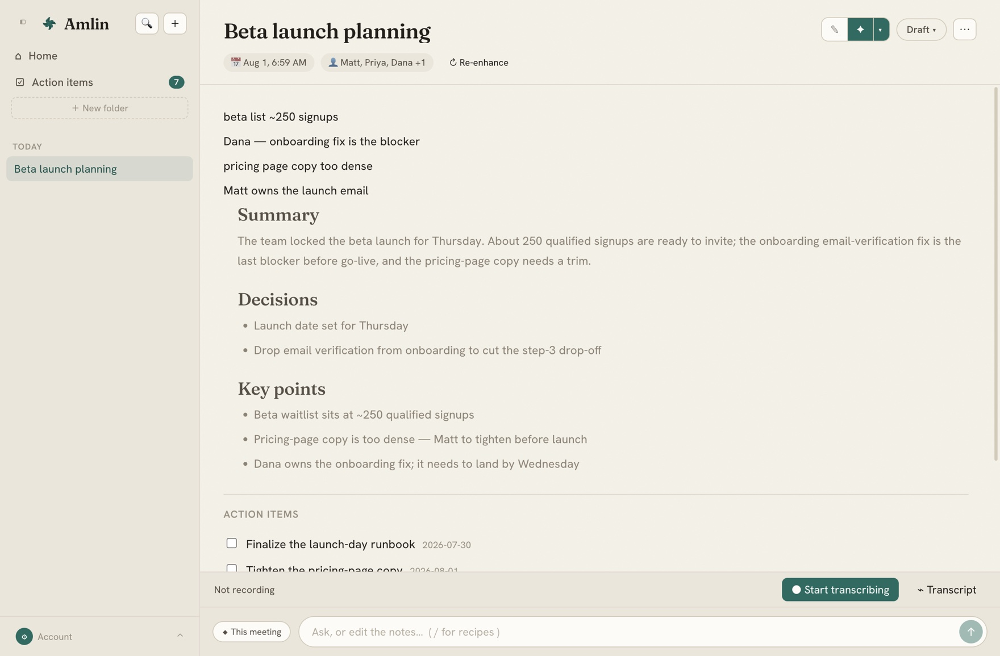
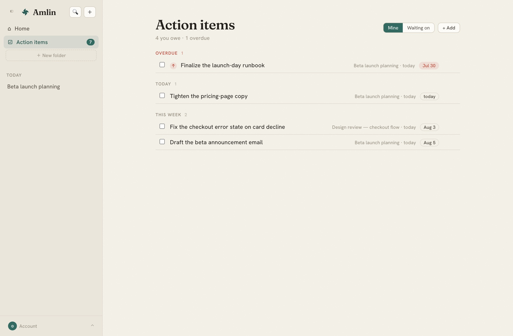

Jot rough notes while you talk — Amlin transcribes the call on your Mac and turns them into a clean, structured summary the moment it ends. No bot in the room; your audio is never saved.
Free to start · macOS 13+ · Apple silicon · Sign in with Google

Mic and system audio, split into who said what — labeled live as you talk.
Chat over one meeting or your whole history, with citations back to the source line.
Your next meeting is one click from capture — Amlin knows when the call starts.
Hold a key in any app — Mail, Slack, your editor — and speak. Amlin drops the ums, fixes punctuation and casing, and types the finished text right where your cursor is.
Amlin pulls the action items out of your meetings — who owns each one, when it's due — and keeps them in one list across every call. Nothing said out loud slips through the cracks.

A dedicated notetaker, a standalone dictation app, and a separate to-do tool add up to ~$35+/month. Amlin is all three for $15 — less than a standalone notetaker subscription, and the value compounds instead of stacking up on your card.
The trust model is the product. Amlin is built so your conversations never leave your control.
Amlin captures your computer's audio at the operating-system level — there's no meeting bot to admit, and nothing for anyone else to install. It all runs on your Mac.
Sound is transcribed live and discarded on the spot — never written to disk. Only your notes and the transcript text remain.
Notes stay on your device and sync only to your own account. Sign in with Google; Calendar access is optional and read-only.
Start free. Upgrade when Amlin becomes part of how you work.
For getting started
or $144 / year — two months free
One subscription, not three. Prices in USD. Cancel anytime.
Download Amlin and let your next meeting write itself up.
Download for MacFree to start · macOS 13+ · Sign in with Google